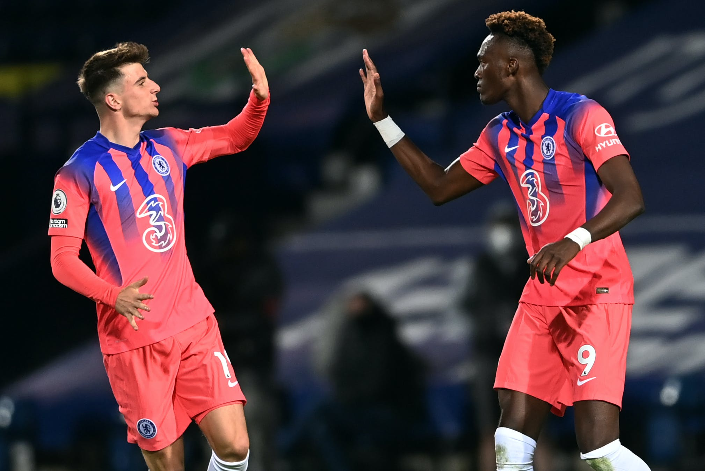
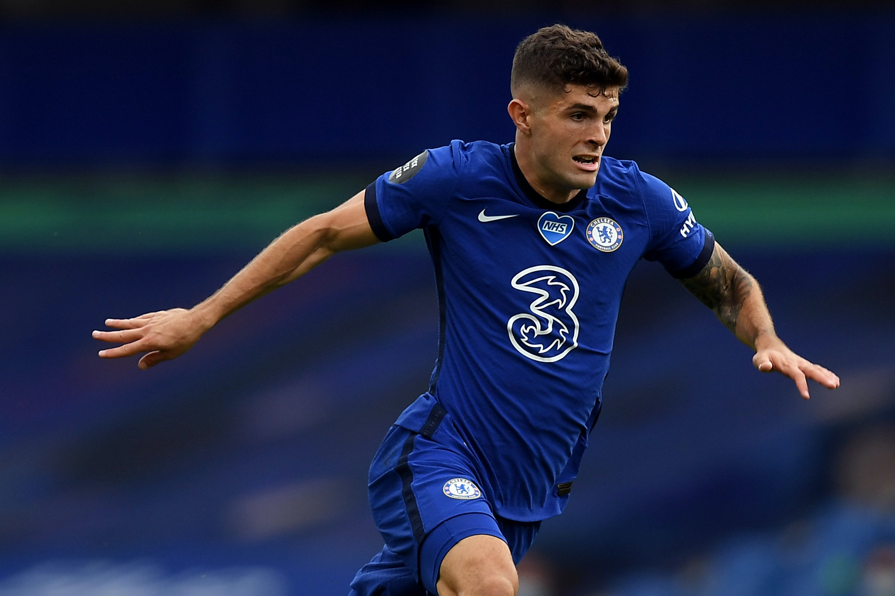

Final Score: West Brom 3-3 Chelsea
After losing to the reigning champions Liverpool last week, Chelsea needed a bounceback performance against newly-promoted West Brom. This was their first premier league meeting since the 2017-18 season, and it included the debut of new signing Thiago Silva and a swap in goal, replacing Kepa with Willy Caballero. While it did not look good for Chelsea, they were able to come away with one point. Here are five key takeaways:
1. Even With The Transfers, The Academy Products Deserve Time
Chelsea spent 222 million euros this summer on eight new signings, but yesterday, it was all about the academy boys. Mason Mount, Callum Hudson-Odoi, and Tammy Abraham scored the three goals and they were the lifeline that kept Chelsea in the game and allowed them to equalize a point. Mason Mount was the man of the match and his goal started the uphill climb for the Blues.

2. West Brom Are In Trouble
The Baggies have let up 11 goals in three games and in a game where they were up 3-0, they should be able to put it away, even if the opposing team is Chelsea. Chelsea dominated the game as expected, but if West Brom keep conceding the way they do, they will be heading back to the EFL Championship in no time.
3. The Kai Havertz Negativity Is An Overreaction
Kai Havertz, Chelsea’s record signing, had a sloppy first two games and many already considered him a flop. But, in his last two games against Barnsley and West Brom, he had three goals and a pivotal assist (to Hudson-Odoi) and just looks more comfortable in Lampard’s system. Hopefully, he will soon be playing his number 10 role but you cannot say he is a flop.
4. Marcos Alonso Needs To Go
Alonso had two mistakes that led to two goals in yesterday’s game, including a putrid header that allowed Callum Robinson to make the game 1-0 inside four minutes. With the signing of Ben Chilwell, everyone knew Alonso was going to get less time but some put Emerson Palmieri in front of Alonso in the pecking order. He does not look up to par and when Chilwell comes back, he should look for possible transfer destinations (I’m sure Antonio Conte would want him).
5. Christian Pulisic And Hakim Ziyech Are Getting Closer, And So Are Chelsea
Chelsea are still without two of their stars, and when they are back and fully fit they will probably be the starting wingers. Everyone knows what Pulisic and Ziyech can do and combined with Havertz, Werner, and the other Chelsea players, the team will be formidable. They are still learning to play together and these are growing pains for Chelsea, but they are starting to learn each other’s strengths and that is the last team other Premier League teams want.
